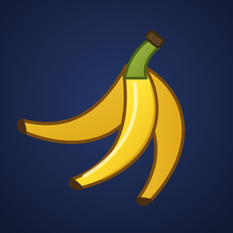

Nanagrams
A fast word-tile game for iPhone: build one crossword, use every tile.
How to play
You start with 21 letter tiles. Build them into a single connected crossword where every run of two or more letters is a word. When your hand is empty and every word is green, tap PEEL to draw another tile. Stuck with a letter? Select it and tap DUMP to trade it for three. Use every tile once the bunch runs out to win.
Playing with a friend
Tap Play Online, then Create Room, and share the six-letter code. Your friend joins with the code from their iPhone, or from the web version. If the app goes to the background mid-game it rejoins the room when you come back.
Common questions
Why isn't my word accepted? Nanagrams uses the public-domain ENABLE word list. Some newer words (like QI and ZA) aren't in it, and hyphenated words such as yo-yo aren't either.
Where's my game? Solo games are saved on your iPhone after every move and resume when you open the app.
Contact
Questions, bugs or feedback: eric.manzi.site@gmail.com